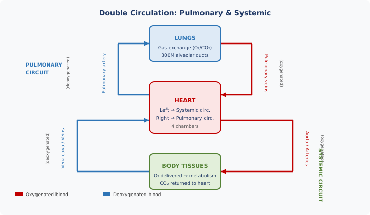
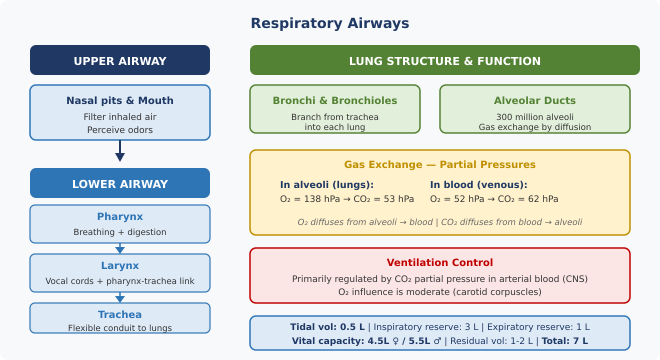
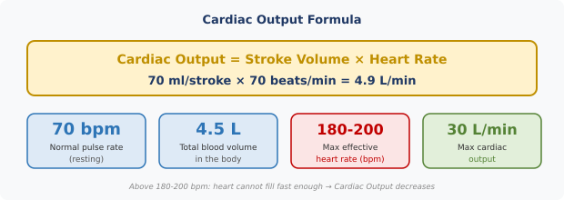

1. Introduction — The Two Circulatory Systems
The human circulatory system is a closed loop that continuously delivers oxygen to every cell of the body and removes metabolic waste. It is composed of two interconnected circuits working in series, both driven by the heart.
The pulmonary circuit (right heart) takes deoxygenated blood from the heart to the lungs for gas exchange, then returns oxygenated blood back to the heart. The systemic circuit (left heart) distributes oxygen-rich blood to all tissues of the body, collecting CO₂ and returning deoxygenated blood to the right heart.

2. Oxygen Requirements of the Organism
Every cell in the body undergoes constant chemical transformations collectively called metabolism. These reactions require energy, which is produced mainly by the oxidation of glucose: glucose + O₂ → energy + CO₂ + H₂O. Oxygen is therefore essential for sustaining cellular life.
However, different tissues have very different tolerances to oxygen deprivation (anoxia). Some tissues (e.g. skeletal muscle, skin) can survive several hours without oxygen. Neurological tissue (brain) is critically sensitive and survives only a few minutes without oxygen — typically 3 to 5 minutes before irreversible damage begins.
3. The Respiratory System
The lungs play a central role in the respiratory system, performing two vital functions: supplying fresh oxygen to the blood and eliminating carbon dioxide. These exchanges occur entirely by passive diffusion — gas molecules move from areas of higher partial pressure to lower partial pressure across the thin alveolar membranes. No active transport is required.
The gas exchange process relies on the coordinated action of the central nervous system (CNS), the circulatory system, and the muscular pump formed by the diaphragm and chest wall. The CNS controls breathing rate automatically, adjusting it to metabolic demand within seconds.

3.1 Gas Exchanges — Partial Pressures
Gas exchange is governed exclusively by differences in partial pressure between alveolar gas and blood. In the lungs, the alveolar O₂ pressure (138 hPa) is higher than the venous blood O₂ pressure (52 hPa), so oxygen diffuses into the blood. Conversely, CO₂ pressure in venous blood (62 hPa) exceeds alveolar CO₂ pressure (53 hPa), driving CO₂ out into the lungs for exhalation.
O₂ diffuses from alveoli to blood (138 > 52). CO₂ diffuses from blood to alveoli (62 > 53). The same principles apply in reverse at the tissue level.
3.2 Pulmonary Volumes and Flow Rates
The total volume of gas that can be moved by the lungs is divided into several clinically important components. The tidal volume is the amount of air exchanged in each normal resting breath (0.5 L). This can be supplemented by the inspiratory reserve volume (3 L additional inhalation) and the expiratory reserve volume (1 L additional exhalation), together defining the vital capacity.
Even after a maximal forced exhalation, air remains trapped in the lungs — the residual volume (1–2 L). This prevents alveolar collapse and maintains a buffer of oxygen. The total lung capacity (TLC) is approximately 7 L.
3.3 Control of Ventilation
Breathing rate is regulated automatically by the brainstem (CNS). The primary driver of ventilation is the partial pressure of CO₂ in arterial blood: when pCO₂ rises (e.g. during exercise), the respiratory centre increases breathing rate and depth to eliminate excess CO₂. The role of O₂ is secondary — it is detected by carotid corpuscles (peripheral chemoreceptors), which provide a moderate supplementary stimulus when O₂ levels fall significantly.
3.4 Upper and Lower Airway Anatomy
The upper airway consists of the nasal pits and mouth, which filter and humidify inhaled air and detect odors. The lower airway is a series of conducting passages leading to the gas-exchange surfaces:
- Pharynx: shared passage for breathing and swallowing (digestion). The epiglottis prevents food from entering the trachea during swallowing.
- Larynx: connects the pharynx to the trachea; houses the vocal cords. The glottis is the narrowest point of the upper airway.
- Trachea: flexible ringed tube leading air from the larynx to the bronchi. Bifurcates at the carina into left and right main bronchi.
- Bronchi and bronchioles: progressively branching airways that distribute air to all regions of the lungs.
- Alveolar ducts and alveoli: 300 million alveoli provide an enormous surface area (~70–80 m²) for gas exchange by diffusion.
3.5 Additional Functions of the Respiratory System
Beyond gas exchange, the respiratory system performs several protective and regulatory functions: it warms and moistens inhaled air to body temperature before it reaches the delicate alveoli; it protects the body through coughing, sneezing, and olfactory alerting; and the lungs themselves are protected by cilia (which sweep debris upward), mucus (which traps particles), and alveolar macrophages (which engulf and destroy pathogens).
4. Blood Circulation
The circulatory system has three components working together: the blood (transport fluid), the heart (pump), and the vascular network (arteries, veins, and capillaries). Its three core functions are: transporting O₂ and nutrients to all tissues; removing CO₂ and metabolic waste; and carrying hormones, immune cells, and heat.
4.1 The Blood
Blood is a complex fluid composed of plasma (55%) and formed elements — red blood cells (41%), white blood cells and platelets (4%).
Plasma is a pale yellow liquid containing approximately 90% water, plus proteins (including antibodies), sodium chloride, nutrients, and hormones. It serves as the carrier medium for all blood cells. Plasma does not itself carry haemoglobin; it transports the red and white blood cells that do.
Red blood cells (erythrocytes) contain haemoglobin, an iron-containing protein that is the primary vehicle for O₂ transport. Each haemoglobin molecule can bind four O₂ molecules. Red blood cells are produced mainly in the bone marrow (with minor contributions from the liver and spleen) and have an average lifespan of approximately 108 days.
White blood cells (leukocytes) are the immune system's defenders. They destroy invading bacteria, produce antibodies, and neutralise bacterial toxins (antitoxins).
Platelets (thrombocytes) are the smallest blood cells and are essential for blood clotting (haemostasis), preventing excessive blood loss after injury.
Blood also assists in temperature regulation: vasoconstriction of peripheral blood vessels preserves core heat in cold conditions, while vasodilation dissipates heat when the body is warm. Blood additionally transports chemical messengers such as hormones (including adrenaline) that modulate organ function and the stress response.
4.2 The Heart
The heart is a muscular pump divided into four chambers: two atria (receiving chambers) and two ventricles (pumping chambers), separated by the interventricular wall. The heart muscle itself is called the myocardium.
Blood flows through the heart in a strictly controlled sequence. Deoxygenated blood enters the right atrium from the vena cava, is pumped to the right ventricle, then into the pulmonary artery toward the lungs. Oxygenated blood returns from the lungs via the pulmonary veins into the left atrium, then into the powerful left ventricle, which propels it into the aorta for systemic distribution. Four valves (tricuspid, pulmonary, mitral, aortic) ensure unidirectional flow.
The cardiac cycle alternates between systole (contraction, ejecting blood) and diastole (relaxation, filling with blood). The heart rests for a fraction of a second between cycles — this diastolic period is critical for the coronary arteries to perfuse the heart muscle itself.
4.4 Cardiac Output

At maximum exertion: up to 30 L/min. Effective heart rate limit: 180–200 bpm. Above this, diastolic filling time is insufficient and cardiac output paradoxically decreases.
4.5 Factors Determining Pulse Rate
Heart rate adapts constantly to the body's oxygen demand. The principal factors that increase heart rate include: physical exercise (dominant stimulus), altitude (reduced pO₂), elevated temperature, psychological stress, emotional states (fear, anxiety, anger), and physiological shock. Conversely, sleep and deep relaxation lower the resting heart rate.
4.6 Blood Pressure
Blood pressure is expressed as two values in mmHg. The systolic pressure (higher number, e.g. 120) is the peak arterial pressure produced by ventricular contraction (systole). The diastolic pressure (lower number, e.g. 70–80) is the residual pressure between beats, when the heart relaxes and the elastic arteries maintain baseline flow.
A healthy young adult typically has a blood pressure around 120/70 mmHg. A useful approximation: diastolic pressure ≈ systolic / 2 + 1.
4.7 Hypertension (High Blood Pressure)
Hypertension is a sustained elevation of blood pressure above normal levels. It is the major risk factor for strokes and a significant contributor to cardiovascular disease. A blood pressure of 160/95 mmHg or above is assessed by EASA as medically unfit for flight operations.
Principal causes of hypertension: stress, smoking, excessive dietary fat and/or salt intake, advancing age, obesity, lack of physical exercise, and narrowing/hardening of the arteries (arteriosclerosis).
Symptoms include heart palpitations, shortness of breath, angina (chest pain), headaches, and nosebleeds. Hypertension can be managed through medication, surgery, or lifestyle modification.
4.8 Hypotension (Low Blood Pressure)
Mild hypotension is usually not dangerous. However, if blood pressure falls sufficiently to deprive tissues of adequate oxygen, it can cause lethargy and fatigue, reduced resistance to the effects of shock (fainting), pulmonary congestion, stagnation of blood flow, and — critically for pilots — reduced tolerance to positive G-forces.
4.3 Blood Vessels
Arteries carry blood away from the heart at high pressure through thick, muscular, elastic walls. Veins return blood to the heart at low pressure; they are thinner-walled and contain valves to prevent backflow. Capillaries are the microscopic vessels with walls only one cell thick — this extreme thinness allows O₂ and nutrients to diffuse out into the surrounding tissues, while CO₂ and waste products diffuse inward. The coronary arteries and veins form the dedicated vascular supply for the heart muscle itself.
5. System Failures and Pathologies
5.1 Cardiac Rhythm Disorders
The heart beats in response to coordinated electrical impulses that originate in the sinoatrial (SA) node. When these impulses are generated or conducted abnormally, the heartbeat becomes irregular. An irregular heartbeat (arrhythmia) may require implantation of a pacemaker to maintain a regular rhythm.
Extrasystoles are premature cardiac contractions triggered from an abnormal location in the heart, outside the normal conduction pathway. Occasional extrasystoles are common and generally benign, but frequent or complex extrasystoles result in aeronautical unfitness until their safety has been evaluated and established.
5.2 Coronary Artery Disease and Angina
The heart muscle is perfused by the coronary arteries. Narrowing of these arteries (typically by atherosclerotic plaques) reduces blood flow to the myocardium. When oxygen demand rises — during exercise, stress, or cold exposure — this reduced supply produces angina pectoris: constricting chest pain that may radiate to the jaw, left arm, or wrist. Crucially, the pain lasts only a few minutes and stops with rest or nitrates.
5.3 Myocardial Infarction (Heart Attack)
Myocardial infarction (MI) is the acute event in which the coronary blood supply is completely cut off, causing a portion of the heart muscle to die (an infarct). The dead tissue cannot conduct electrical impulses, causing the heartbeat to become irregular or to stop entirely (cardiac arrest). Symptoms resemble angina but do not resolve with rest — though in some cases there is no pain at all (silent MI).
Approximately 50% of MI patients die immediately. Those who survive can potentially be treated with cardiac massage and defibrillation. Without treatment, cardiac arrest is fatal within 4 minutes. Those who survive the first 24 hours have a reasonable chance of recovery, but regaining a flying licence requires extensive cardiac investigation, and a multicrew restriction is always imposed.
5.4 Pulmonary Embolism — "Economy Class Syndrome"
A pulmonary embolism occurs when a blood clot (thrombus) — most commonly formed in the deep veins of the legs — becomes dislodged and travels through the venous system to the pulmonary artery, where it causes a blockage. This interrupts blood flow to a portion of the lung, causing lung tissue death and preventing oxygenation of blood in that region.
Prolonged immobility during long-haul flights predisposes the formation of deep vein thrombosis (DVT) in the lower limbs. Both flight crew and passengers should be encouraged to move and walk around the cabin during extended flights to reduce this risk.
5.5 Blood Donation and Aircrew
A standard blood donation removes 350–450 ml, which represents approximately 10% of total blood volume. This transient reduction creates a risk of hypotension, which — combined with the physiological demands of flight — could impair performance and G-tolerance. Aircrew who donate blood must therefore refrain from flying duties for a minimum of 36 hours. Bone marrow donation requires a 1-week stand-down with a blood count check before returning to flight duties.
6. Conclusion — Medical Fitness and Prevention
Rigorous initial medical selection and periodic health checks are the primary safeguards against sudden incapacitation in the cockpit due to cardiovascular disease, epilepsy, or other conditions. As pilots age, the frequency of medical examinations increases, and ECG (electrocardiogram) recordings become a key tool for identifying individuals at elevated cardiovascular risk.
Healthy lifestyle choices are not optional extras for pilots — they are a professional responsibility. Effective exercise means at least 20 minutes of aerobic activity, three times per week, sufficient to at least double the resting heart rate. Diet should avoid excessive saturated fat and salt, smoking must be eliminated, and alcohol consumption should be carefully controlled.
• Avoid excessive fat and salt in diet
• No smoking (major risk factor for coronary disease and stroke)
• Careful with alcohol (cardiovascular and neurological effects)
• Regular ECGs become mandatory as pilots age